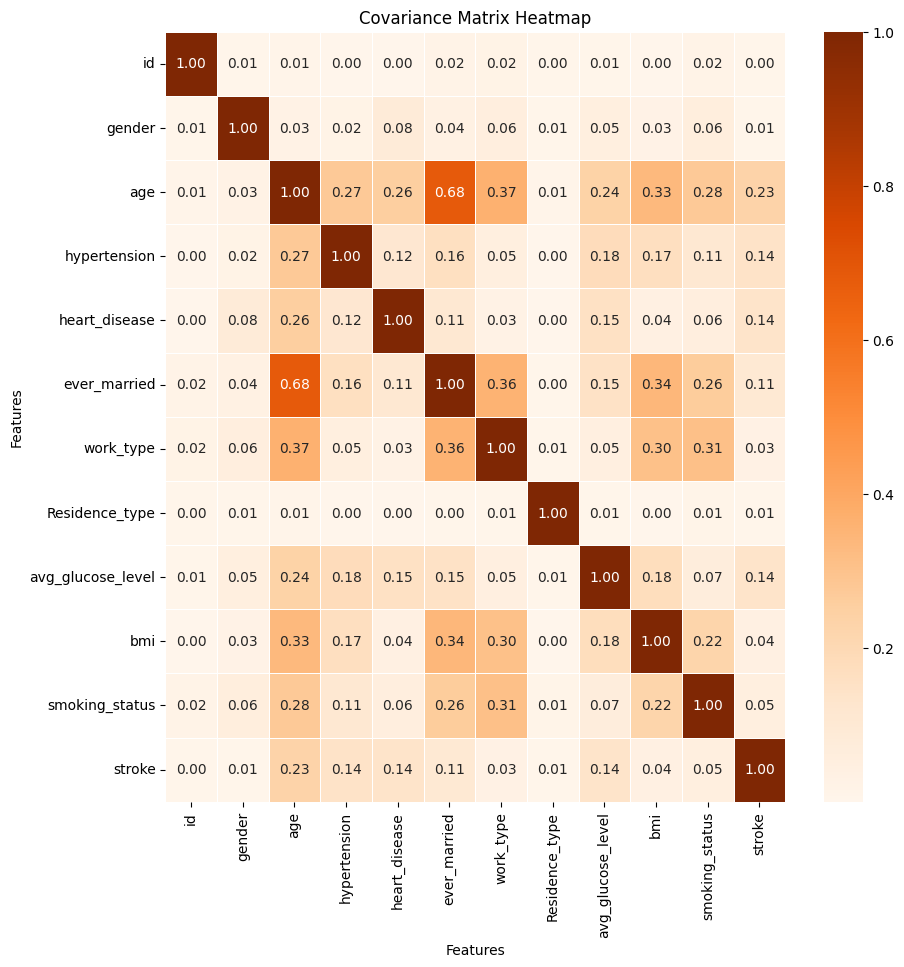

What are the main factors/causes of strokes worldwide?
By Olivia Ericsson, Yuna Lee, Henry Barrera
Introduction
Understand the main causes of strokes worldwide is critical
for understanding how best to reduce the risk of strokes for an individual.
According to the Center for Disease Control and Prevention, more than 795,000
people in the United States have a stroke each year. Stroke-related costs in the United States
amount to more than $56.5 billion between the years of 2018 to 2019. This total includes the cost of
healthcare workers, medicines related to treatment and missed days of work. Our interest in studying this topic,
stems from the vast impact strokes have on the public.
By definition, a stroke is a medical emergency in the brain in which the blood
flow to the brain is disrupted causing sudden bleeding in the brain. As a result,
an individual can have trouble walking, speaking and understanding their surroundings.
An early treatment of tPA (clot buster) can minimize impact to the brain from a stroke,
however, many individuals are left disabled or paralyzed as a result.
There are several factors that contribute to strokes including individuals with high
blood pressure, high cholestrol, heart disease and diabetes are considered risk groups for strokes.
In addition, genetic factors can also contribute to higher risks of strokes including age,
past family history and specific medical conditions. Individuals more subject to strokes include older
individuals between 60-80 years old and strokes are more often more prevelant in men compared to women.
Overall, staying active, limiting high saturated fats, good sleep
and reducing stress can help to reduce risk of strokes.
Through our research, we hope to get a better understanding of what the main
factors are that contribute to strokes. We hope to make changes to our own lifes
in order to reduce chances of strokes in the future. For more information on strokes,
please visit Mayo Clinic: Strokes.
Dataset introduction
Our research makes use of a stroke dataset found on kaggle called
"healthcare-dataset-stroke-data.csv" which contains information
on stroke patients in the United States. The data has 5110 observations with
12 attributes. Information on the features can be found in the following
table:
| Variable Name |
Details |
| Gender |
Gender of the individual |
| Age |
Age of the individual |
| hypertension |
Blood pressure of an individual |
| heart_disease |
Determines whether the person has heart disease |
| Ever_married |
Determines indivuiduals martial status |
| work_type |
Work type of the patient |
| Residence_type |
Residence type of the patient |
| avg_glucose_level |
Average glucose level in the blood of the patient |
| bmi |
Body Mass Index of the patient |
| smoking_status |
Smoking status of the patient |
| stroke |
Determines if the patient has had a stroke |
Once our preprocessing stage was complete which included deleting null values, we were able to
make data visualizations to understand what factors most influence strokes.
The following static scatterplot visualization displays Average Glucose Levels compared to
Age for stroke and non-stroke individuals.
In general, we can conclude from the scatterplot that
as the age of individual increases, their average glucose levels
increase. As for trends in the data, the distribution of average glucose
levels between 60 and 140 is relatively uniform across different ages. However,
for those aged over 50, there is a higher concentration of average glucose levels
between 180 and 240, indicating a greater likelihood of elevated glucose levels in
older individuals. Individuals who have had a stroke (colored in blue on the scatterplot)
are more frequently observed in the higher age range of 50 to 80, and the occurrence of
stroke is particularly high in those over the age of 75. Although the plot seems to show
an equal possibility of stroke occurrence between normal (60-120mg/dL) and high average
glucose levels (above 150 mg/dL), considering the proportion of stroke (blue points) in
the upper right and lower right parts relative to the non-stroke dots, it is observed
that a higher glucose level is associated with a higher possibility of stroke occurrence.
Age, Average Glucose Levels, and BMI distribution for stroke and non stroke patients
This static box plot displays the distribution of age, average
glucose levels and BMI for stroke and non-stroke patients. It is
clear that stroke patients are typically older individuals ranging
from 58 years old to 82 years old. A similar trend can be observed
with average glucose levels which is a leading cause of stroke according
to our heatmap below. The median glucose
level for a stroke patient was around 106.58 compared to a non-stroke
patient which has an average glucose level of around 91. From our boxplot it is clear that only the
lower part of the plot for stroke is overlapped with the non-stroke average
glucose level distribution indicating no statistical significance within these areas specifically.
Futhermore, the BMI levels for stroke and
non-stroke individuals were shockingly not that different. It can be observed that
the median BMI for stroke was 29 while median BMI for non-stroke was 28, indicating
that there is not a huge difference in BMI. Overall, we can conclude that age and average
glucose levels impact strokes more compared to BMI due to more overlaps with BMI compared
to the other two features.
The relationship between stroke and other societal and biological factors
Furthermore, we investigated how stroke is correlated with the other 11 variables in our dataset through a heatmap.
After converting our categorical data into numerical form using label encoding we could display the features correlation
with
stroke. What we can conclude from the heatmap is that the correlation
among variables and strokes are relatively small,
highlighting that there is a small chance there is a linear relationship among
variables and stroke.
From the correlation plot, it can be concluded that
among all features, stroke has the strongest correlation
with age at 0.23. The second strongest correlation is tied
between hypertension and heart disease at 0.14. Stroke might
also be correlated with marriage status and average glucose levels.
The variable with the weakest correlation with stroke is residence
type and gender, highlighting that environmental factors might not play a big role in strokes.
BMI and smoking status are positively correlated,
but are also weak. This is interesting considering that our group, prior to conducting our research,
thought that smoking status and BMI would highly affect whether an
individual was at an increased risk of a stroke.

Percentage of stroke prevalence for each variable
We have also created an interactive bar plot that displays all the different
features related to a stroke patients to get an overall view on what
factors most contribute to strokes. Each bar is displayed as a percentage
to the total dataset. When a user hovers over a bar in the visualization,
stroke prevalence percentage for that feature is displayed.
Stroke rates vary significantly based on
several demographic and health-related factors.
Men experience a slightly higher stroke rate at 4.5%
compared to women at 4.0%. Individuals with hypertension
are particularly at risk, with a stroke rate of 13.5%,
significantly higher than the 3.8% observed in those without hypertension.
Marital status also influences stroke rates, with married individuals showing
a higher incidence at nearly 6%, compared to about 1% among those who are
unmarried. In terms of work type, self-employed people have the highest s
troke rate at 7%, whereas children and those raising them show nearly
no stroke occurrences. Urban residents experience a slightly higher
stroke rate of 4.5%, compared to 4% in rural areas. Smoking status
also impacts stroke risk, with former smokers having the highest
rate at 7%, followed by current smokers at 5.3% and never-smokers at
4.5%. Age is a strong factor in stroke incidence, with rates peaking
at around 21% among individuals in their 80s. Additionally, those with
an average glucose level of 260 show the highest stroke rate at about 25%.
Lastly, a Body Mass Index (BMI) of around 45, indicative of high obesity,
correlates with the highest stroke occurrence rate at approximately 9%.
These statistics highlight the complex interplay between lifestyle, health
conditions, and demographic factors in influencing stroke risk.
Compare Age, BMI, Smoking-staus and Mean Average Glucose Level for Stroke and Non-stroke
According to the heatmap, it is clear that age, BMI, smoking status and
average glucose levels highly affect stroke patients. In this interactive plot
when a user hovers over the age Vs. BMI plot, a second plot displaying the count
of formerly smoked, never smoked and smokes is shown. Through this
we can observe that individuals that smoke are at a higher risk for stroke
and they also have a higher BMI and are at an older age. In addition, it is clear that the mean average glucose level is higher
for formerly smoked compared to those that do not smoke.
Conclusion and future work
In this website, we explore different biological,
societal and environmental factors to determine
the main factors or causes of strokes in individuals.
This dataset was published three years ago by Kaggle. The data
comes from WHO (World Health Organization). Since this dataset is from
a couple of years ago, shifts in smoking habits and other societal factors
can overtime thereby when doing more research moving forward it would be interesting
to look at more recent
datasets to see if similar trends in stroke patients still exist. In addition,
please keep in mind that our dataset included a smaller percentage of stroke patients compared to
non-stroke individuals making it hard to make generalizations.
If you are interested in understanding what factors are most
prevalent in stroke patients or interested to understand
how each visualization was built, please contact:
Olivia Ericsson (ericsson.o@northeastern.edu), Yuna Lee
(lee.yuna1@northeastern.edu), Henry Barrera (barrera.h@northeastern.edu)